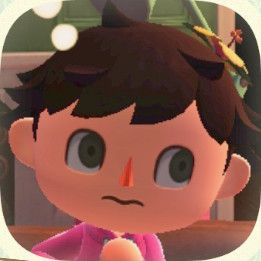

description
checklist preferences infoOptionally check off which fish you've already caught, making it easier to tell which fish you still need to find!
View project on GitHub!
Hi! I made this tool because I wanted a simple way to know
what fish I could catch to complete the
Critterpedia. I'm also using it
as a way to brush up on my JavaScript. If you have any suggestions, want
to reach out or anything else, reach me through one of these:
GitHub,
Twitter, or
Discord.